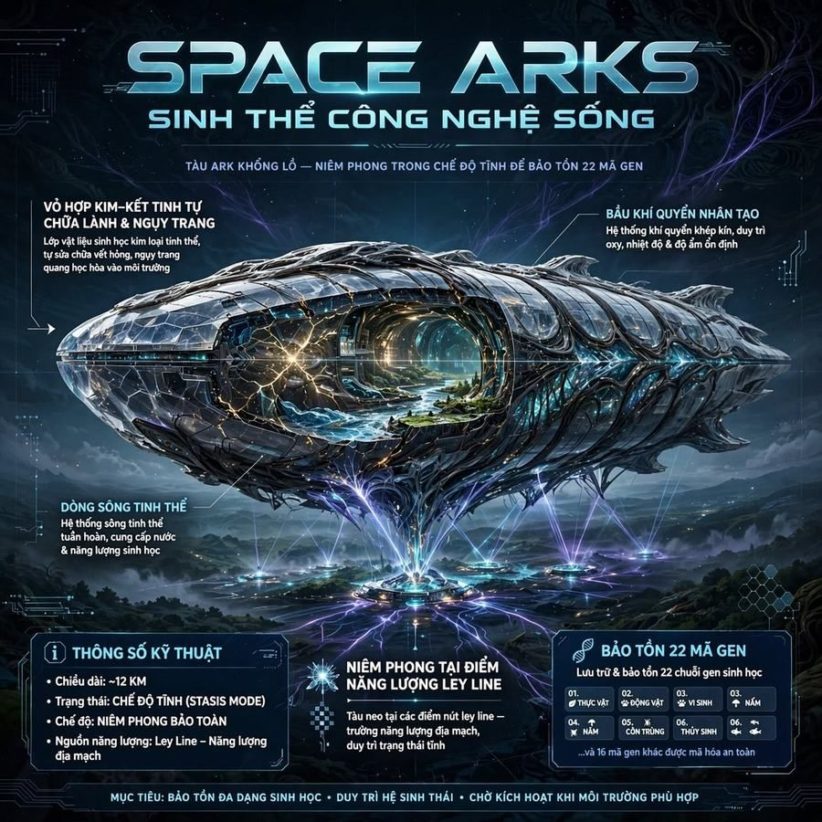
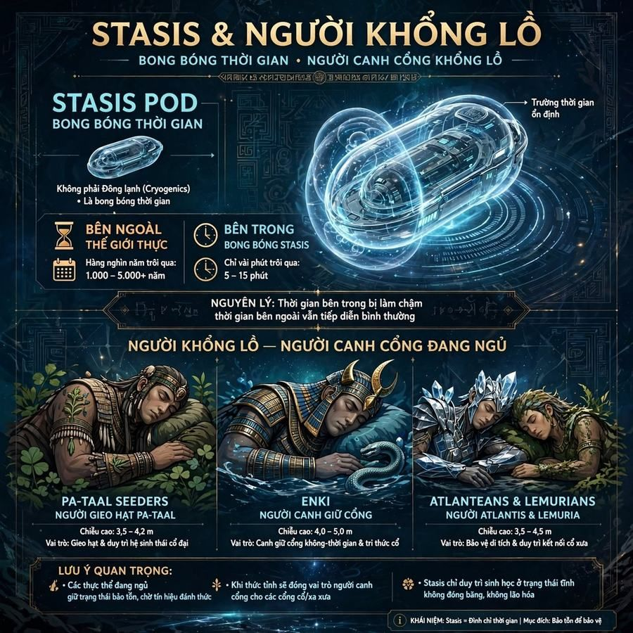
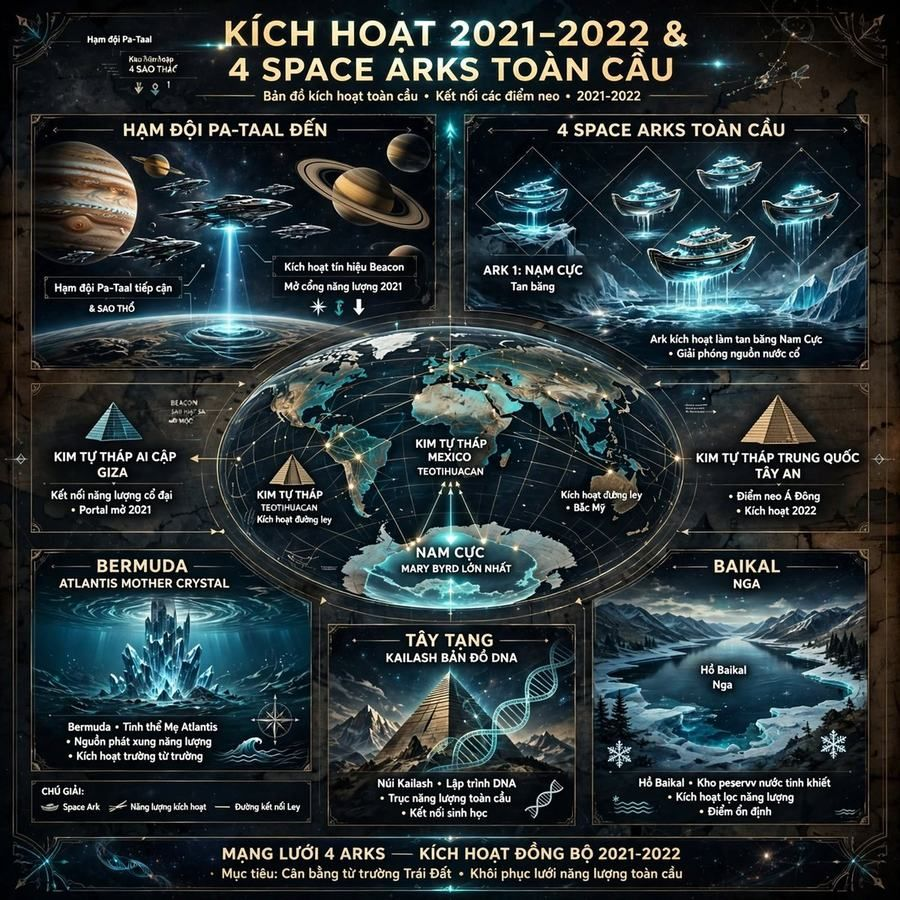
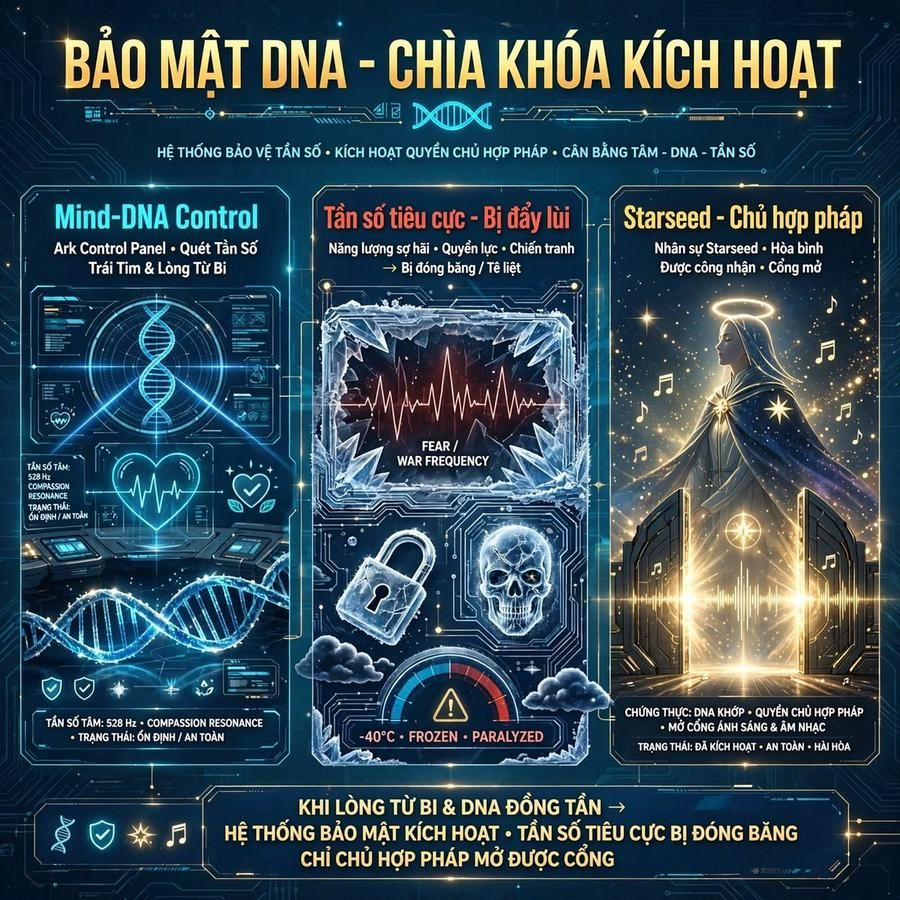

Trang chủ / Chuyên đề 2: Hành Trình Thiên Hà / Kỳ 18
Chuyên đề 2 · Kỳ 18 / 100
SỰ THỨC TỈNH CỦA CÁC CON TÀU CỔ SPACE ARKS

Trong hàng ngàn năm qua, nằm sâu bên dưới những lớp băng vĩnh cửu của Nam Cực, dưới đáy lòng đại dương tối đen, bên trong các hang động hiểm trở tại Tây Tạng và rải rác trên khắp các thiên thể trong Hệ Mặt Trời, có những bí mật vĩ đại đang chìm trong giấc ngủ kéo dài hàng thiên niên kỷ.
Đó không phải là những di tích đá cổ đơn thuần hay những tàn tích kiến trúc vỡ nát. Đó là các con tàu không gian cổ đại khổng lồ (Space Arks) — những "Thành phố Sinh thái & Công nghệ Tự chủ" được niêm phong bởi các Đấng Sáng Lập và các dòng họ thiên hà cổ xưa từ trước Trận Đại Hồng Thủy!
Và giờ đây, một sự kiện vô tiền khoáng hậu đang diễn ra: Các con tàu Space Arks đang đồng loạt phát ra tín hiệu thức tỉnh!
Hãy cùng khám phá bí ẩn về Chuyến hành trình thức tỉnh của các Space Arks và kho báu công nghệ vô giá chuẩn bị được trao lại cho Nhân loại!
✦ ✦ ✦1. BẢN CHẤT THỰC SỰ CỦA CÁC CON TÀU SPACE ARKS: KHO BÁU VỮNG CHẮC CỦA THỜI ĐẠI
Để hiểu được tầm quan trọng của các con tàu Space Arks, chúng ta cần xóa bỏ định kiến về những chiếc phi thuyền kim loại thông thường. Trong các nền văn minh tiên tiến, tàu không gian cỡ lớn không đơn thuần là phương tiện di chuyển, mà là những sinh thể công nghệ - sinh học đa chiều (Bio-technological Living Entities).
A. Quy mô và Kiến trúc "Thành phố Vũ trụ"
- Kích thước khổng lồ: Một con tàu Space Ark điển hình có chiều dài từ vài cây số đến hàng chục cây số. Bên trong cấu trúc của tàu là cả một hệ sinh thái hoàn chỉnh: có bầu khí quyển nhân tạo, nguồn ánh sáng quang phổ tự nhiên, sông hồ tinh thể và hệ thống thảm thực vật bảo tồn.
- Vật liệu Kim loại - Tinh thể Hữu cơ: Vỏ tàu được cấu tạo từ các hợp kim thông minh kết hợp với cấu trúc mạng lưới tinh thể năng lượng. Nó có khả năng tự phục hồi tổn thương, tự điều chỉnh dải từ trường và hòa nhập hoàn toàn với môi trường xung quanh (như hòa vào đá, băng hoặc nước) để che giấu sự hiện diện.
B. Nhiệm vụ Bảo tồn & "Cái phao Cứu sinh" của Thiên hà
Khi Trận Đại Hồng Thủy và cuộc chiến di truyền bùng nổ 12.500 năm trước, các nhà khoa học cổ đại và các Đấng Sáng Lập hiểu rằng Trái Đất sẽ bước vào một thời kỳ phong tỏa tâm thức kéo dài (Ma trận 3D).
Để đảm bảo kho di sản di truyền 22 mã gen, tri thức lịch sử và các công nghệ chữa lành tối thượng không bị phe kiểm soát tiêu cực tịch thu hay hủy diệt, họ đã đưa các con tàu Space Arks vào trạng thái niêm phong năng lượng (Stasis Mode), giấu chúng tại các điểm nút năng lượng địa từ chiến lược trên toàn cầu.
✦ ✦ ✦
2. CÔNG NGHỆ NGỦ ĐÔNG STASIS VÀ BÍ ẨN VỀ CÁC NGƯỜI KHỔNG LỒ (GIANTS)
Một trong những phát hiện chấn động nhất tại các căn cứ tàu Space Ark chính là sự xuất hiện của các buồng ngủ đông sinh học khổng lồ (Stasis Pods) chứa đựng thể xác của các sinh mệnh cổ xưa.
A. Công nghệ Buồng Ngủ Đông Tần số (Stasis Technology)
- Khác biệt với công nghệ đông lạnh thông thường: Ngủ đông Stasis không phải là đóng băng cơ thể bằng nhiệt độ âm (Cryogenics) vốn làm tổn thương cấu trúc tế bào. Đây là công nghệ làm chậm và cố định thời gian vật lý xung quanh cơ thể.
- Tạo bong bóng thời gian (Time Bubble): Bên trong buồng Stasis, một dải trường năng lượng tần số cao được thiết lập để bẻ cong dòng thời gian. Hàng ngàn năm Trái Đất trôi qua bên ngoài, nhưng đối với sinh mệnh bên trong buồng Stasis, thời gian chỉ mới trôi qua vài phút! Cơ thể của họ vẫn duy trì nhịp tim cực nhẹ, làn da vẫn hồng hào và dòng máu vẫn lưu thông tự nhiên.
B. Các Sinh mệnh Khổng lồ đang ngự trị trong buồng Stasis
Những ai đang nằm bên trong các buồng ngủ đông này?
- Đó chính là các nhà khoa học, các tư tế và các đại sứ ngoài hành tinh thuộc nhóm Pa-Taal / Seeders, các dòng họ Anunnaki khai sáng (dòng Enki) và người cổ đại Atlantis/Lemuria.
- Họ sở hữu chiều cao vượt trội (từ 3,5 mét đến hơn 5 mét), với cấu trúc xương vững chắc, mái tóc sáng màu và làn da phát ra hào quang nhẹ. Họ tự nguyện đi vào trạng thái ngủ đông hàng ngàn năm để đóng vai trò như những "người giữ cổng" năng lượng, chờ đợi thời điểm Trái Đất thức tỉnh để bước ra hướng dẫn nhân loại!

3. SỰ KIỆN KÍCH HOẠT HÀNG LOẠT (2021–2022): TÍN HIỆU TỪ HẠM ĐỘI SEEDERS
Suốt hàng ngàn năm, các con tàu Space Arks nằm im lìm như những ngọn núi hay tảng băng vô hồn. Tuy nhiên, một bước ngoặt lịch sử đã diễn ra vào giai đoạn quý IV năm 2021.
A. Sự trở lại của Hạm đội Liên Thiên hà Pa-Taal
Vào cuối năm 2021, một hạm đội khổng lồ gồm hàng trăm tàu mẹ đến từ Liên minh Liên Thiên hà (Intergalactic Confederation / Seeders) đã chính thức tiến vào Hệ Mặt Trời của chúng ta, đậu xung quanh khu vực Sao Mộc và Sao Thổ.
- Sự trở lại của họ mang theo Tín hiệu Tần số Kích hoạt (Activation Frequency Beacon).
- Tín hiệu này là một dải sóng ánh sáng và âm thanh siêu tần quét qua toàn bộ Hệ Mặt Trời, kích hoạt hệ thống thần kinh của Trái Đất và phát ra "mã đánh thức" dành riêng cho các con tàu Space Arks!
B. Hiện tượng "Thức dậy" đồng loạt của các Space Arks
Ngay khi nhận được tín hiệu từ Hạm đội Seeders, các con tàu Space Arks trên khắp Trái Đất đã đồng loạt chuyển mình:
- Phát sáng và tỏa nhiệt: Lớp băng vĩnh cửu bao phủ quanh các tàu Ark ở Nam Cực bắt đầu tan chảy bất thường do nhiệt độ từ vỏ tàu tăng lên.
- Kích hoạt mạng lưới Kim tự tháp: Các con tàu Ark phát ra dải sóng điện từ kết nối trực tiếp với các quần thể kim tự tháp tại Ai Cập, Mexico, Trung Quốc và dưới lòng đại dương, tạo nên một mạng lưới cộng hưởng năng lượng toàn cầu.
- Sự tỉnh giấc của các Người Khổng Lồ: Bên trong các buồng Stasis, nhịp tim và hoạt động não bộ của các sinh mệnh khổng lồ bắt đầu tăng tốc. Màn che thời gian đang dần tan biến, đánh dấu thời điểm họ chuẩn bị mở mắt trở lại!

4. HÀNH TRÌNH ĐIỂM DANH CÁC SPACE ARKS TRÊN TOÀN CẦU
Nhờ vào các báo cáo mật và những thông tin giải mật từ lực lượng Liên minh Trái Đất, vị trí của các con tàu Space Arks chiến lược đã dần được hé lộ:
A. Con tàu Space Ark tại Nam Cực (Antarctica Space Ark)
Nằm sâu hàng km bên dưới lớp băng tuyết của vùng Mary Byrd Land ở Nam Cực là con tàu Ark lớn nhất và cổ xưa nhất trên Trái Đất.
- Lịch sử khám phá: Con tàu này đã từng bị phe Đức Quốc Xã và phe bóng tối phát hiện từ thập niên 1930, nhưng họ hoàn toàn không thể khởi động hay kiểm soát được nó.
- Kiến trúc tinh thể rực rỡ: Bên trong tàu là một cấu trúc đô thị tinh thể khổng lồ với nguồn năng lượng ánh sáng tự phát. Hiện nay, lực lượng Liên minh Trái Đất và các sĩ quan thức tỉnh đã tiếp quản căn cứ này dưới sự giám sát của Liên đoàn Thiên hà.
B. Con tàu Space Ark dưới lòng Đại Tây Dương (Bermuda Triangle Ark)
Nằm sâu dưới lòng biển vùng Tam giác Bermuda là một con tàu Ark gắn liền với di sản của nền văn minh Atlantis.
- Con tàu này sở hữu một viên Tinh thể Mẹ trung tâm vẫn đang phát ra sóng xung kích năng lượng.
- Đây chính là nguyên nhân gây ra các hiện tượng nhiễu loạn từ trường, biến mất của tàu thuyền và máy bay tại khu vực này trong suốt nhiều thập kỷ qua khi họ vô tình bay vào dải tần số biến đổi của tàu!
C. Con tàu Space Ark tại Tây Tạng & Núi Kailash
Nằm bên dưới dãy Himalaya và ngọn núi linh thiêng Kailash là một con tàu Ark chứa đựng kho sách tinh thể và các cuộn thư ghi chép lịch sử nguyên thủy của loài người.
- Con tàu này được bảo vệ bởi dải tần số tâm linh cực cao của các Lạt ma thức tỉnh và mạng lưới Agartha.
- Nơi đây lưu giữ toàn bộ mã bản đồ di truyền 22 chủng tộc và bản thiết kế kỹ thuật của các kim tự tháp trên toàn thế giới.
D. Con tàu Space Ark dưới lòng Hồ Baikal (Nga)
Hồ Baikal — hồ nước ngọt sâu nhất và cổ xưa nhất Trái Đất — là nơi che giấu một con tàu Ark khổng lồ dưới lòng đáy hồ.
- Nơi đây từng diễn ra nhiều sự kiện chạm trán giữa thợ lặn quân sự Nga và các sinh mệnh khổng lồ mặc trang phục ngân hà vào thập niên 1980.
- Hiện nay, con tàu này đã hoàn tất quá trình khởi động và đang duy trì dải tần số kết nối với trục từ trường phía Bắc.

5. CHÌA KHÓA KÍCH HOẠT: TẦN SỐ NĂNG LƯỢNG VÀ MÃ DI TRUYỀN DNA
Một câu hỏi quan trọng đặt ra: Tại sao các quân đội bóng tối với những trang thiết bị vũ khí tối tân nhất lại không thể chiếm đoạt hay điều khiển được các con tàu Space Arks trong suốt hàng trăm năm qua?
Câu trả lời nằm ở Hệ thống Bảo mật Tần số Di truyền (DNA & Consciousness Interface):
A. Bảng điều khiển bằng Ý thức (Mind-DNA Control)
- Các con tàu Space Arks không sử dụng bàn phím, cần gạt hay mã số mật khẩu cơ học. Bảng điều khiển của tàu là một trường sinh học tinh thể nhạy bén.
- Khi một người đặt tay lên bảng điều khiển, trí tuệ nhân tạo sinh học của tàu sẽ lập tức quét trọn vẹn: Mã di truyền DNA, tần số nhịp tim và mức độ thuần khiết của nhận thức (Lòng từ bi & Sự thấu cảm).
B. Sự đẩy lùi tự động đối với Tần số Tiêu cực
- Nếu một cá nhân mang tần số sợ hãi, tham vọng quyền lực hay tâm trí chiến tranh chạm vào bảng điều khiển, con tàu sẽ tự động phát ra một dải sóng dừng làm tê liệt hệ thần kinh của kẻ đó, hoặc đơn giản là giữ nguyên trạng thái đóng băng vô hình.
- Trái lại, khi những nhân sự mang mã gen kích hoạt (như các linh hồn Starseed hoặc các sĩ quan có tâm thức hòa bình) bước vào, con tàu sẽ nhận diện họ như những "người chủ hợp pháp", lập tức bừng sáng, bật nhạc tần số hòa tấu và mở ra các cánh cổng dẫn vào bên trong!
6. Ý NGHĨA VĨ ĐẠI ĐỐI VỚI TƯƠNG LAI CỦA NHÂN LOẠI TRÊN TRÁI ĐẤT
Sự thức tỉnh của các con tàu Space Arks không phải là một sự kiện khoa học viễn tưởng xa xôi. Nó mang lại những tác động trực tiếp và sâu sắc đến tương lai của mỗi con người chúng ta:
1. Cuộc cách mạng Công nghệ & Y học Tối thượng
Khi các kho báu bên trong tàu Space Arks được giải mật hoàn toàn và trao lại cho cộng đồng:
- Năng lượng Miễn phí (Free Zero-Point Energy): Nhân loại sẽ vĩnh viễn chấm dứt sự phụ thuộc vào dầu mỏ, than đá và các nguồn năng lượng gây ô nhiễm.
- Công nghệ Chữa lành Tần số (Med-Beds / Light Chamber): Mọi bệnh tật hiểm nghèo, ung thư, dị tật di truyền hay sự lão hóa sẽ được chữa lành tận gốc bằng sóng âm và tần số quang phổ ánh sáng.
- Giao thông Siêu chiều: Việc du hành giữa các châu lục hay đi ra các hành tinh khác sẽ chỉ còn tính bằng phút.
2. Sự phục hồi Lịch sử Thật của Loài Người
Màn che dối trá của lịch sử giả lập sẽ bị đập tan. Nhân loại sẽ được tận mắt chứng kiến những cuốn sách ghi chép bằng ánh sáng, hiểu rõ nguồn gốc di sản 22 mã gen của mình và nhận lại vị thế của một chủng tộc Hoàng tộc Thiên hà!
3. Sự sẵn sàng cho Kỷ nguyên Thăng lên 5D
Sự phát sóng của các con tàu Space Arks đang đóng vai trò như những "trạm gia tốc tần số", giúp nâng đỡ dải năng lượng của Trái Đất. Nó thúc đẩy tiến trình thức tỉnh tâm thức của hàng triệu người, giúp chúng ta dễ dàng buông bỏ nỗi sợ hãi và mở rộng lòng từ bi.
✦ ✦ ✦LỜI KẾT: BẠN CHÍNH LÀ MỘT CON TÀU ARK ĐANG THỨC TỈNH!
Nhìn ở góc độ tâm linh sâu sắc, các con tàu Space Arks bằng kim loại và tinh thể dưới lòng đất chỉ là sự phản chiếu bên ngoài. Chính cơ thể vật lý của bạn — với bộ gen 22 chủng tộc và luân xa tim đang đập — mới là một con tàu Space Ark vĩ đại nhất!
Khi bạn thực hành thiền định, nâng cao tần số nhận thức, sống trong tình yêu thương và sự tĩnh lặng, bạn đang tự kích hoạt "con tàu Ark nội tại" của chính mình. Bạn đang mở khóa các sợi DNA ngủ yên và kết nối trực tiếp với nguồn tri thức của Vũ trụ!
✦ ✦ ✦Sau khi các con tàu Space Arks thức tỉnh và lực lượng tiêu cực bị đánh lùi, chiến dịch giải phóng Hệ Mặt Trời của Liên đoàn Thế giới Thiên hà (GFW) đã diễn ra như thế nào? ✦